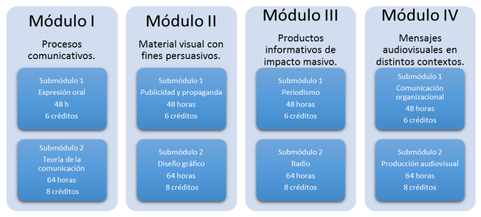
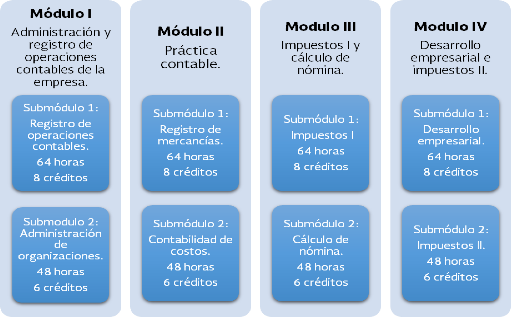

Tecnologias de la Informacion y Comunicación (TIC's)
Desarrolla en el estudiantado las habilidades comunicativas, verbales y
no verbales para expresarse a través de diversos códigos y herramientas
del lenguaje a través de las diferentes tecnologías de la información.
La capacitación de Tecnologías de la Información y Comunicación pertenece al campo disciplinar de Comunicación, tiene la
finalidad de desarrollar en el estudiantado las habilidades comunicativas, verbales y no verbales para expresarse a través de
diversos códigos y herramientas del lenguaje a través de las diferentes tecnologías de la información. Por otra parte, las
Tecnologías de la Información y Comunicación se vinculan de manera interdisciplinar tanto con el campo de Matemáticas como
con el de Comunicación, ya que aportan los elementos para la resolución de problemas mediante los algoritmos y la programacion.
Mapa de la capacitación en TIC
Turismo
Promueve el desarrollo de habilidades fundamentales del
sector social-productivo, tales como: el liderazgo, la
innovación, el autoaprendizaje, la comunicación asertiva en
distintos contextos, la integración efectiva de equipos de
trabajo y la creatividad al brindar servicios de manera
sustentable. El campo disciplinar de las Ciencias Sociales busca promover y desarrollar aprendizajes que formen estudiantes críticos, reflexivos,
participativos y conscientes para comprender e interpretar — con pertinencia- la realidad social, los fenómenos naturales y los
desafíos tecnológicos de una actualidad cambiante que les permita construir razonamientos basados en el conocimiento, la
consciencia y la experiencia, valorando la multiculturalidad y el respeto ambiental hacia su entorno y el mundo.Mapa de la capacitación en Turismo
Comunicación
Desarrolla conocimientos y habilidades para analizar,
elaborar y diseñar mensajes utilizando la radio, y la
televisión, los impresos, entre otros medios, partiendo
de la base del proceso comunicativo para estructurar
planes de promoción integrales.
Permite que el estudiantado logre integrarse o
vincularse de manera inmediata en el contexto en el
que se desarrolle. El propósito de la Capacitación de Comunicación es: Descubre habilidades comunicativas de forma informada y asertiva para
concretar productos diversos como: textos, discursos, gráficos y audiovisuales innovadores con impacto masivo que alcancen las
expectativas de un posible cliente u organización y contemplen las necesidades de su contexto.

Mapa de la capacitación en Comunicación
Administración
Permiten al alumnado representar la realidad de su entorno social,
para transformarla mediante la apropiación de conocimientos, el
descubrimiento de significados, la generación de ideas y transmitirlas
eficazmente. La capacitación para el trabajo en Administración se ubica dentro del Campo de las Ciencias Sociales, ya que le permiten al
alumnado representar la realidad de su entorno social, para transformarla mediante la apropiación de conocimientos, el
descubrimiento de significados, la generación de ideas y transmitirlas eficazmente.Mapa de la capacitación en Administración
Contabilidad
La capacitación para el trabajo en Contabilidad se encuentra centrada en el campo disciplinar de Ciencias Sociales, el cual
conforme al Marco Curricular Común tiene la finalidad de cubrir las necesidades del estudiantado de bachillerato, ya que en él se
integran asignaturas que le permitirán abordar aspectos particulares de distintas disciplinas, con la intención de adquirir los
elementos necesarios para incorporarse a la vida laboral, favoreciendo un análisis crítico con visión emprendedora sobre los
factores y aspectos fundamentales que intervienen en la productividad y competitividad de una organización y su relación con el
entorno socioeconómico o bien ingresar en el sistema de educación superior.

Mapa de la capacitación en Contabilidad